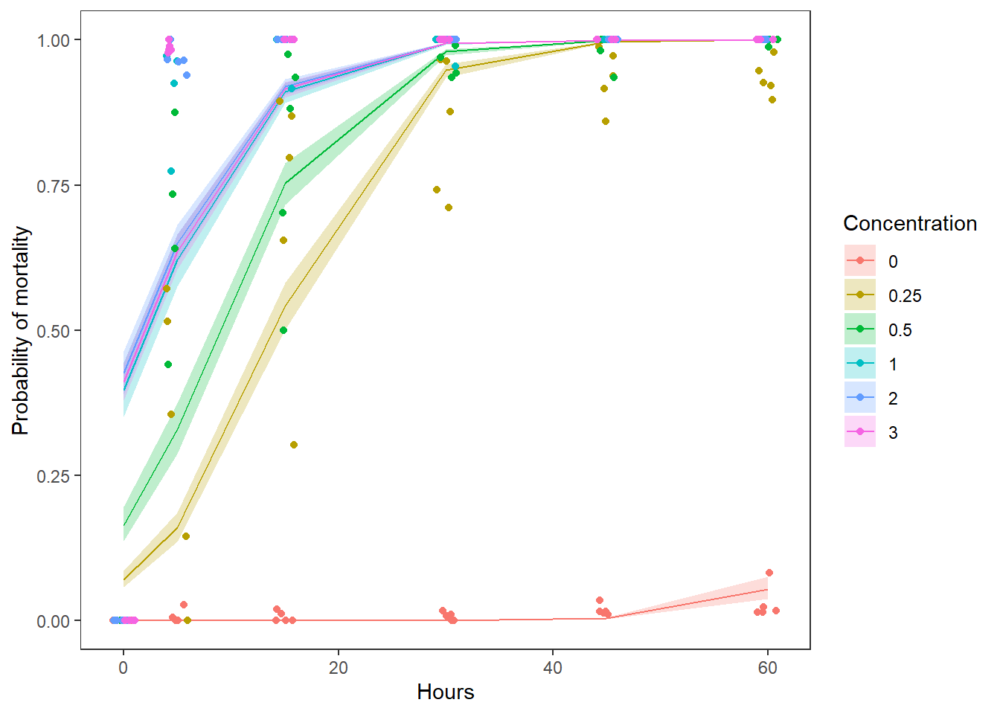

Generalized linear models: logistic regression

Introduction
This week in lab, we will start to take a closer look at generalized linear models (GLM) through the lens of logisitic regression using maximum likelihood estimation and Bayesian inference. This is a family that includes multiple types of analyses depending on the data. For example, we might have binary data (0, 1), binomial data (number of success per some number of trials), or multinomial data (group membership as a response). We will look at the simplest of these cases, binary logistic regression, this week in the homework.
The data
For our exercise this week, we will work with a data set from a
Biological Field Station intern project. The purpose of the project was
to test the efficacy of Virkon as a molluscicide for dissinfecting
equipment following exposure to zebra mussels Dreissena
polymorpha. The study examined the effects of exposure time and
concentration on mortality. The response in this data set is
dead, a 1/0 variable indicating whether or not a zebra
mussel was dead. Usually, with this kind of data, we use a
1 to indicate survival, but it seemed like too much fun to
pass up the opportunity to model mortality as a success. So, for this
data set a 1 indicates dead.
Start by reading in the data.
vd <- read.csv("data/veligers.csv")This data set contains a pile of variables, which of course makes it very fun to play with. We will work with some, but not all, of these variable this week for lab.
Explanations of variables are as follows:
Date: calendar date for start of each lab test
Location: the location in Otsego Lake, NY from which
mussels were collected
SolnAge: the age of the Virkon solution
Concentration: concentration of Virkon in solution
Time: exposure time
We will treat Concentration as a categorical variable
because we only have a few different concentrations, although the
argument could be made to treat it as a continuous variable.
vd$Concentration <- as.factor(vd$Concentration)The remaining variables are physical and chemical parameters of water measured either in Otsego Lake, or in the Virkon solution.
Exercises
A worked example
Let’s start with a simple example to get you moving along. We are
interested in determining the effects of Concentration and
Time on the probability of zebra mussel death
(dead) following exposure. If you have been following
closely during the past few weeks, you will recognize that with a
categorical variable (Concentration) and a continuous
variable (Time) we are looking at something that should
resemble ANCOVA to you. But, our response,
dead, can only take on values of 0 and 1, so we know that
we need to use a GLM to accommodate this.
Analysis
Start by fitting a model with additive effects of
Concentration and Time on the response
dead using either maximum likelihood estimation
(glm() function in base R) or Bayesian estimation
(stan_glm() function in rstanarm).
You could do it like this with the glm() function:
# Fit the model
v_mod <- glm(dead ~ Concentration + Time, family = "binomial", data = vd)Or you could fit it like this in the rstanarm
package:
# Library
library(rstanarm)
v_mod <- stan_glm(dead ~ Concentration + Time,
family = "binomial",
data = vd,
cores = 4
)Cool, that was easy!
Results
Let’s have a look at what the model tells us about our biological questions of interest now.
If you used glm() to fit the model: Remember, we need to
work with the Anova() function in the car
package to use the correct calculations because we have continuous and
categorical variables. The only difference is that we are now using an
analysis of deviance to summarize significance, which requires the use
of a Type-II test instead of a Type-III test.
If you used stan_glm() to fit the model: Remember, Stan
won’t give you p-values or significance codes, so if you want to know
whether groups are different, you need to do the math here and compare
posteriors like we did in Chapter
17.2.
Question 1. At the default confidence level (\(\alpha\) = 0.05), what can you determine
about effects of Concentration and Time with
respect to statistical significance? Answer in sentence form, stating
the null hypotheses and supporting statistics.
Just as with all of our other models, we can use the
summary() function to get the output from R.
# Print the summary of the model
summary(v_mod)##
## Call:
## glm(formula = dead ~ Concentration + Time, family = "binomial",
## data = vd)
##
## Deviance Residuals:
## Min 1Q Median 3Q Max
## -4.3208 -0.0218 0.0214 0.2047 5.0817
##
## Coefficients:
## Estimate Std. Error z value Pr(>|z|)
## (Intercept) -13.825053 0.355912 -38.84 <2e-16 ***
## Concentration0.25 11.252573 0.311103 36.17 <2e-16 ***
## Concentration0.5 12.201641 0.325214 37.52 <2e-16 ***
## Concentration1 13.407026 0.344278 38.94 <2e-16 ***
## Concentration2 13.527866 0.342963 39.44 <2e-16 ***
## Concentration3 13.464877 0.345367 38.99 <2e-16 ***
## Time 0.182631 0.005109 35.75 <2e-16 ***
## ---
## Signif. codes: 0 '***' 0.001 '**' 0.01 '*' 0.05 '.' 0.1 ' ' 1
##
## (Dispersion parameter for binomial family taken to be 1)
##
## Null deviance: 15731.0 on 12108 degrees of freedom
## Residual deviance: 4989.6 on 12102 degrees of freedom
## AIC: 5003.6
##
## Number of Fisher Scoring iterations: 8The summary of the model gives us the estimated coefficients on the logit scale, along with our usual significance codes and an AIC score (now in the default output because we are using maximum likelihood estimation).
Even though these parameters are on the logit scale, we can still make limited inference about the direction of relationships as we would with linear models used earlier in the semester.
Question 2. What, if any, is the direction of the
relationship between Time and zebra mussel mortality?
Question 3. What is the general trend in mortality
with the different concentrations listed in the summary of
vmod? This may take a little thought, but remember that
even as categorical variables, factor levels are listed alphanumerically
in the output. If Concentration == 0 (“control”) is in the
intercept, then the remaining coefficients are directly comparable.
One thing that you’ll notice is missing from this output is the R2 value that we have become familiar with during the past several weeks while working with linear models. There is no R2 value because we are no longer estimating these models using ordinary least squares, but rather maximum likelihood estimation or Bayesian inference.
Under Bayesian inference in the rstanarm package, we can
just use the bayes_R2() function to get this.
If we wanted to get an analagous metric of variance explained by our
model for the MLE fit using glm() output, we could estimate
a pseudo-R2. There are many of these available
depending on the model and nature of our data. The simplest, and
arguably most common is the McFadden R2. To
estimate this one, we compare the deviance of our model to the deviance
of an intercept-only (i.e. “null”) model using the output from the
summary function above:
\[McFadden R^2 = 1 - \frac{Deviance_{residual}}{Deviance_{null}}\]
In R, the residual deviance is stored in v_mod$deviance
and the null deviance is stored in v_mod$null.deviance.
Question 4. How much of the variation in zebra
mussel mortality is explained by the additive effects of
Concentration and Time?
Now that we have a feel for just how much variability this model
explains, the next step in reporting our results here is to extract some
information about how dead changes with Time
beyond simply stating that it was either “inversely” or “proportionally”
related to Time. We will include Concentration
in our predictions to account for changes between doses.
Recall that we can make predictions from our model either by hand or
by using the predict function in R. Note
that if we use the predict() function for glm
or stan_glm objects in R, we no longer have the ability to
set the interval argument as we did for objects resulting
from the lm() function (well, we can - it will just be
ignored). But, we can get standard error estimates if we make
predictions on the link scale and specify se.fit = TRUE.
Therefore, if we want confidence intervals on our predictions, we will
need to do it by hand (well, in the computer).
Start by making some predictions. Recall from that this gets a little
more complicated when we have multiple explanatory variables. The
predict function requires a data.frame with
names that match the names of explanatory
variables from our original data set, vd.
# Calculate mean predicted value and SE for the predictions
# on the link scale
logit_preds <- data.frame( predict(v_mod, type = "link", se.fit = TRUE) )
# Now get lower and upper CIs
logit_preds$lwr <- logit_preds$fit + logit_preds$se.fit * qnorm(0.025)
logit_preds$upr <- logit_preds$fit + logit_preds$se.fit * qnorm(0.975)Now, we need to define a function to invert the logit link function
if we want to get our predictions back on the probability scale (and we
do). If you fit this model using rstanarm you can use the
invlogit() function that ships with it.
invlogit <- function(x) {
exp(x) / (1 + exp(x))
}Now we can convert our predictions to the probability scale. Here, we
loop over columns 1, 3, and 4 of our preds dataframe using
the apply function because the second column is just the
standard errors for our predicted fit at each point. This gives us mean
and 95% CI on the probability scale.
# Convert the predictions to the probability scale
real_preds <- apply(logit_preds, 2, invlogit)
# Add our predictions back to the original data
vd_preds <- data.frame(vd, real_preds)Finally, let’s plot our predictions. Note that here we will plot our raw data as the proportion of zebra mussels dead at a given time and concentration by trial (date). Here is my graph:
library(tidyverse)
# Summarize proportion dead at time by concentration
# Use dates so we can show reps
sum_points <- vd_preds %>%
group_by(Concentration, Time, Date) %>%
summarize(props = sum(dead)/length(dead))
# Plot the predictions
ggplot(vd_preds, aes(x = Time, y = fit)) +
geom_ribbon(
aes(ymin = lwr, ymax = upr, fill = Concentration), alpha = 0.25) +
geom_line(aes(color = Concentration)) +
geom_jitter(
aes(x = Time, y = props, color = Concentration), data = sum_points,
width = 1) +
xlab("Hours") +
ylab("Probability of mortality") +
theme_bw() +
theme(panel.grid = element_blank())
Using either the graph or the estimates in the fit
column of preds, we can estimate about how much
dead changes across the range of Time
observed. We can report this by Concentration to convey
more information.
Question 5. Use the graph you have created, along
with the model results to describe how zebra mussel mortality changed
with Concentration and Time in paragraph form.
Be sure to report the relevant test statistics along with your answer.
This requires you to put together the info from each of the previous
questions.
This work is licensed under a Creative Commons Attribution 4.0 International License.